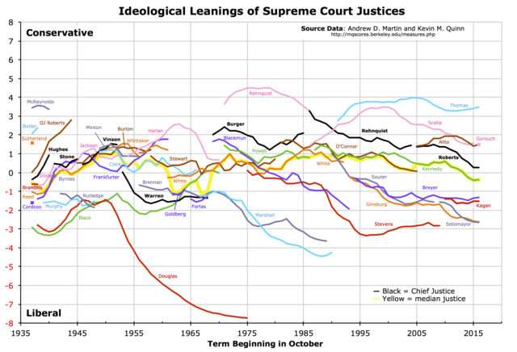
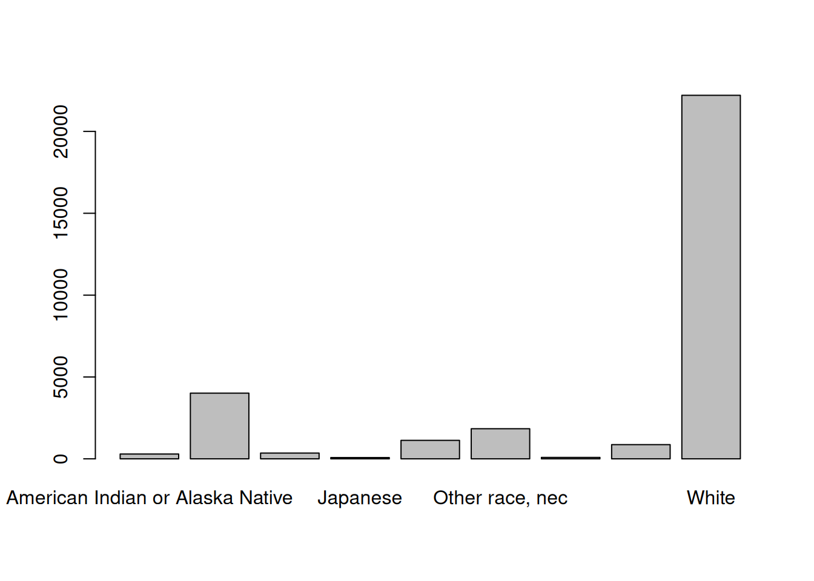
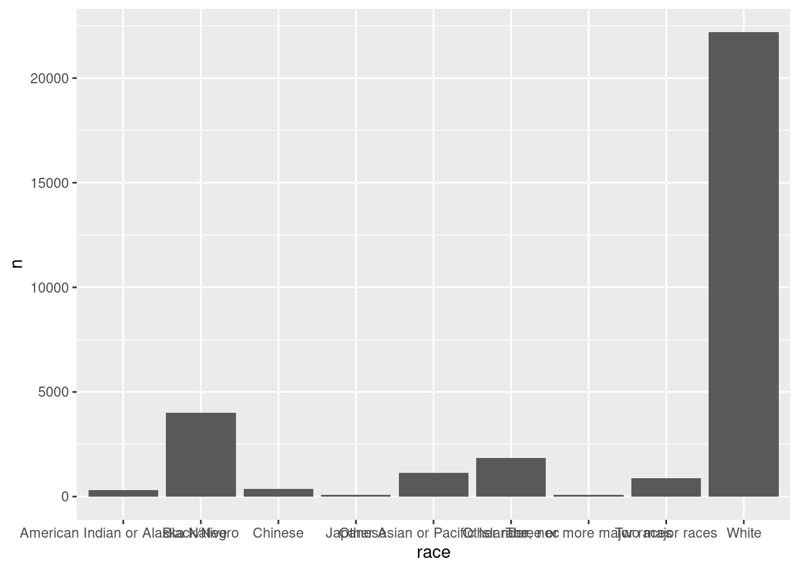
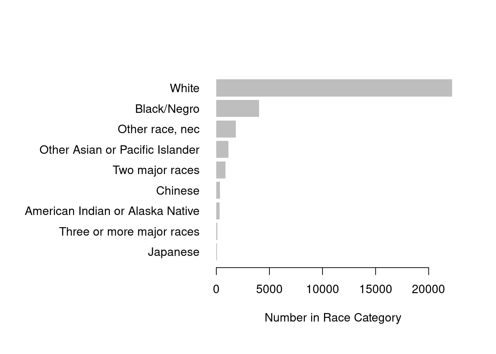
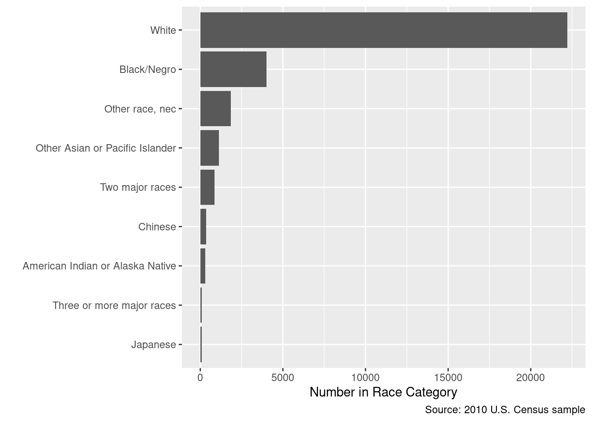
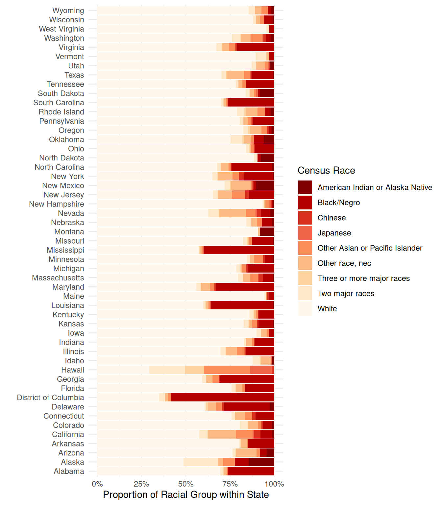
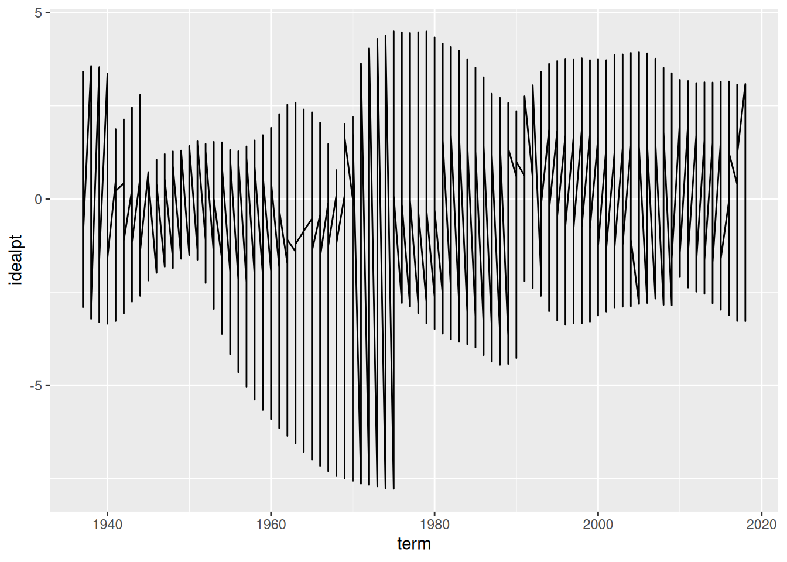

cen10 <- readRDS("data/input/usc2010_001percent.Rds")10 Visualization
Motivation: The Law of the Census
In this module, let’s visualize some cross-sectional stats with an actual Census. Then, we’ll do an example on time trends with Supreme Court ideal points.
Why care about the Census? The Census is one of the fundamental acts of a government. See the Law Review article by Persily (2011), “The Law of the Census.”1 The Census is government’s primary tool for apportionment (allocating seats to districts), appropriations (allocating federal funding), and tracking demographic change. See for example Hochschild and Powell (2008) on how the categorizations of race in the Census during 1850-1930.2 Notice also that both of these pieces are not inherently “quantitative” — the Persily article is a Law Review and the Hochschild and Powell article is on American Historical Development — but data analysis would be certainly relevant.
Time series data is a common form of data in social science data, and there is growing methodological work on making causal inferences with time series.3 We will use the the ideological estimates of the Supreme court.
Where are we? Where are we headed?
Up till now, you should have covered:
- The R Visualization and Programming primers at https://rstudio.cloud/primers/
- Reading and handling data
- Matrices and Vectors
- What does
:mean in R? What about==?,?,!=,&,|,%in% - What does
%>%do?
- What does
Today we’ll cover:
- Visualization
- A bit of data wrangling
Check your understanding
- How do you make a barplot, in base-R and in ggplot?
- How do you add layers to a ggplot?
- How do you change the axes of a ggplot?
- How do you make a histogram?
- How do you make a graph that looks like this?

10.1 Read data
First, the census. Read in a subset of the 2010 Census that we looked at earlier. This time, it is in Rds form.
The data comes from IPUMS4, a great source to extract and analyze Census and Census-conducted survey (ACS, CPS) data.
10.2 Counting
How many people are in your sample?
nrow(cen10)[1] 30871This and all subsequent tasks involve manipulating and summarizing data, sometimes called “wrangling”. As per last time, there are both “base-R” and “tidyverse” approaches.
We have already seen several functions from the tidyverse:
selectselects columnsfilterselects rows based on a logical (boolean) statementsliceselects rows based on the row numberarrangereordered the rows in descending order.
In this visualization section, we’ll make use of the pair of functions group_by() and summarize().
10.3 Tabulating
Summarizing data is the key part of communication; good data viz gets the point across.5 Summaries of data come in two forms: tables and figures.
Here are two ways to count by group, or to tabulate.
In base-R Use the table function, that provides how many rows exist for an unique value of the vector (remember unique from yesterday?)
table(cen10$race)
American Indian or Alaska Native Black/Negro
295 4013
Chinese Japanese
354 77
Other Asian or Pacific Islander Other race, nec
1129 1839
Three or more major races Two major races
88 869
White
22207 With tidyverse, a quick convenience function is count, with the variable to count on included.
count(cen10, race)# A tibble: 9 × 2
race n
<chr> <int>
1 American Indian or Alaska Native 295
2 Black/Negro 4013
3 Chinese 354
4 Japanese 77
5 Other Asian or Pacific Islander 1129
6 Other race, nec 1839
7 Three or more major races 88
8 Two major races 869
9 White 22207We can check out the arguments of count and see that there is a sort option. What does this do?
count(cen10, race, sort = TRUE)# A tibble: 9 × 2
race n
<chr> <int>
1 White 22207
2 Black/Negro 4013
3 Other race, nec 1839
4 Other Asian or Pacific Islander 1129
5 Two major races 869
6 Chinese 354
7 American Indian or Alaska Native 295
8 Three or more major races 88
9 Japanese 77count is a kind of shorthand for group_by() and summarize. This code would have done the same.
cen10 %>%
group_by(race) %>%
summarize(n = n())# A tibble: 9 × 2
race n
<chr> <int>
1 American Indian or Alaska Native 295
2 Black/Negro 4013
3 Chinese 354
4 Japanese 77
5 Other Asian or Pacific Islander 1129
6 Other race, nec 1839
7 Three or more major races 88
8 Two major races 869
9 White 22207If you are new to tidyverse, what would you think each row did? Reading the function help page, verify if your intuition was correct.
where n() is a function that counts rows.
10.4 base R graphics and ggplot
Two prevalent ways of making graphing are referred to as “base-R” and “ggplot”.
10.4.1 base R
“Base-R” graphics are graphics that are made with R’s default graphics commands. First, let’s assign our tabulation to an object, then put it in the barplot() function.
barplot(table(cen10$race))
10.4.2 ggplot
A popular alternative a ggplot graphics, that you were introduced to in the tutorial. gg stands for grammar of graphics by Hadley Wickham, and it has a new semantics of explaining graphics in R. Again, first let’s set up the data.
Although the tutorial covered making scatter plots as the first cut, often data requires summaries before they made into graphs.
For this example, let’s group and count first like we just did. But assign it to a new object.
grp_race <- count(cen10, race)We will now plot this grouped set of numbers. Recall that the ggplot() function takes two main arguments, data and aes.
- First enter a single dataframe from which you will draw a plot.
- Then enter the
aes, or aesthetics. This defines which variable in the data the plotting functions should take for pre-set dimensions in graphics. The dimensionsxandyare the most important. We will assignraceandcountto them, respectively, - After you close
ggplot().. add layers by the plus sign. Ageomis a layer of graphical representation, for examplegeom_histogramrenders a histogram,geom_pointrenders a scatter plot. For a barplot, we can usegeom_col()
What is the right geometry layer to make a barplot? Turns out:
ggplot(data = grp_race, aes(x = race, y = n)) + geom_col()
10.5 Improving your graphics
Adjusting your graphics to make the point clear is an important skill. Here is a base-R example of showing the same numbers but with a different design, in a way that aims to maximize the “data-to-ink ratio”.
par(oma = c(1, 11, 1, 1))
barplot(sort(table(cen10$race)), # sort numbers
horiz = TRUE, # flip
border = NA, # border is extraneous
xlab = "Number in Race Category",
bty = "n", # no box
las = 1) # alignment of axis labels is horizontal
Notice that we applied the sort() function to order the bars in terms of their counts. The default ordering of a categorical variable / factor is alphabetical. Alphabetical ordering is uninformative and almost never the way you should order variables.
In ggplot you might do this by:
library(forcats)
grp_race_ordered <- arrange(grp_race, n) %>%
mutate(race = as_factor(race))
ggplot(data = grp_race_ordered, aes(x = race, y = n)) +
geom_col() +
coord_flip() +
labs(y = "Number in Race Category",
x = "",
caption = "Source: 2010 U.S. Census sample")
The data ink ratio was popularized by Ed Tufte (originally a political economy scholar who has recently become well known for his data visualization work). See Tufte (2001), The Visual Display of Quantitative Information and his website https://www.edwardtufte.com/tufte/. For a R and ggplot focused example using social science examples, check out Healy (2018), Data Visualization: A Practical Introduction with a draft at https://socviz.co/6. There are a growing number of excellent books on data visualization.
10.6 Cross-tabs
Visualizations and Tables each have their strengths. A rule of thumb is that more than a dozen numbers on a table is too much to digest, but less than a dozen is too few for a figure to be worth it. Let’s look at a table first.
A cross-tab is counting with two types of variables, and is a simple and powerful tool to show the relationship between multiple variables.
xtab_race_state <- table(cen10$state, cen10$race)
xtab_race_state
American Indian or Alaska Native Black/Negro Chinese
Alabama 2 128 1
Alaska 11 6 0
Arizona 28 23 1
Arkansas 1 45 0
California 42 253 141
Colorado 7 26 3
Connecticut 1 39 7
Delaware 3 28 1
District of Columbia 0 35 0
Florida 9 304 4
Georgia 2 304 5
Hawaii 0 0 2
Idaho 2 0 0
Illinois 5 194 6
Indiana 2 66 3
Iowa 0 9 1
Kansas 2 24 2
Kentucky 2 35 2
Louisiana 3 161 1
Maine 0 4 1
Maryland 2 177 4
Massachusetts 5 38 15
Michigan 5 147 8
Minnesota 6 25 5
Mississippi 1 116 0
Missouri 4 74 2
Montana 8 0 0
Nebraska 2 11 0
Nevada 6 15 6
New Hampshire 1 1 1
New Jersey 0 130 19
New Mexico 21 3 1
New York 13 305 55
North Carolina 12 220 4
North Dakota 4 1 0
Ohio 1 122 5
Oklahoma 21 20 0
Oregon 5 5 4
Pennsylvania 2 156 10
Rhode Island 2 3 0
South Carolina 2 120 1
South Dakota 7 1 0
Tennessee 0 97 0
Texas 14 316 15
Utah 8 0 1
Vermont 0 2 0
Virginia 0 171 8
Washington 14 20 9
West Virginia 0 5 0
Wisconsin 6 27 0
Wyoming 1 1 0
Japanese Other Asian or Pacific Islander Other race, nec
Alabama 0 3 8
Alaska 0 5 2
Arizona 0 12 74
Arkansas 0 1 11
California 27 359 585
Colorado 0 10 28
Connecticut 0 16 20
Delaware 0 4 5
District of Columbia 0 1 1
Florida 1 24 72
Georgia 0 35 35
Hawaii 16 35 0
Idaho 1 0 8
Illinois 3 53 75
Indiana 0 8 20
Iowa 0 4 10
Kansas 0 8 6
Kentucky 0 4 5
Louisiana 0 5 7
Maine 0 1 0
Maryland 1 12 28
Massachusetts 2 28 26
Michigan 1 23 8
Minnesota 1 28 13
Mississippi 0 3 2
Missouri 0 9 6
Montana 0 0 1
Nebraska 0 5 6
Nevada 2 15 41
New Hampshire 1 3 1
New Jersey 2 65 69
New Mexico 1 1 23
New York 3 68 154
North Carolina 1 12 40
North Dakota 0 0 0
Ohio 2 17 7
Oklahoma 0 5 15
Oregon 0 11 21
Pennsylvania 1 28 30
Rhode Island 0 4 6
South Carolina 0 4 6
South Dakota 1 1 2
Tennessee 0 13 13
Texas 2 92 253
Utah 1 6 14
Vermont 0 0 1
Virginia 2 29 29
Washington 4 46 37
West Virginia 0 0 0
Wisconsin 1 11 13
Wyoming 0 2 2
Three or more major races Two major races White
Alabama 1 8 344
Alaska 0 15 37
Arizona 2 11 485
Arkansas 1 2 247
California 14 174 2168
Colorado 1 22 401
Connecticut 1 7 284
Delaware 1 1 66
District of Columbia 0 2 21
Florida 2 42 1435
Georgia 1 21 587
Hawaii 14 27 39
Idaho 1 6 129
Illinois 2 35 856
Indiana 1 6 514
Iowa 0 8 287
Kansas 0 8 237
Kentucky 1 9 357
Louisiana 0 6 273
Maine 0 1 117
Maryland 1 13 302
Massachusetts 0 18 515
Michigan 2 23 792
Minnesota 1 10 483
Mississippi 2 1 167
Missouri 2 14 516
Montana 0 0 88
Nebraska 0 5 155
Nevada 1 16 171
New Hampshire 0 1 129
New Jersey 3 25 589
New Mexico 1 6 146
New York 8 51 1220
North Carolina 2 20 648
North Dakota 0 1 46
Ohio 3 20 931
Oklahoma 3 24 266
Oregon 4 9 279
Pennsylvania 1 27 1045
Rhode Island 1 4 74
South Carolina 1 6 325
South Dakota 0 2 72
Tennessee 0 9 474
Texas 2 71 1792
Utah 0 8 255
Vermont 0 4 59
Virginia 4 24 548
Washington 2 33 524
West Virginia 0 3 168
Wisconsin 1 8 497
Wyoming 0 2 47Another function to make a cross-tab is the xtabs command, which uses formula notation.
xtabs(~ state + race, cen10)What if we care about proportions within states, rather than counts? Say we’d like to compare the racial composition of a small state (like Delaware) and a large state (like California). In fact, most tasks of inference is about the unobserved population, not the observed data — and proportions are estimates of a quantity in the population.
One way to transform a table of counts to a table of proportions is the function prop.table. Be careful what you want to take proportions of – this is set by the margin argument. In R, the first margin (margin = 1) is rows and the second (margin = 2) is columns.
ptab_race_state <- prop.table(xtab_race_state, margin = 2)Check out each of these table objects in your console and familiarize yourself with the difference.
10.7 Composition Plots
How would you make the same figure with ggplot()? First, we want a count for each state \(\times\) race combination. So group by those two factors and count how many observations are in each two-way categorization. group_by() can take any number of variables, separated by commas.
grp_race_state <- cen10 %>%
count(race, state)Can you tell from the code what grp_race_state will look like?
# run on your own
grp_race_stateNow, we want to tell ggplot2 something like the following: I want bars by state, where heights indicate racial groups. Each bar should be colored by the race. With some googling, you will get something like this:
ggplot(data = grp_race_state, aes(x = state, y = n, fill = race)) +
geom_col(position = "fill") + # the position is determined by the fill ae
scale_fill_brewer(name = "Census Race", palette = "OrRd", direction = -1) + # choose palette
coord_flip() + # flip axes
scale_y_continuous(labels = percent) + # label numbers as percentage
labs(y = "Proportion of Racial Group within State",
x = "",
source = "Source: 2010 Census sample") +
theme_minimal()
10.8 Line graphs
Line graphs are useful for plotting time trends.
The Census does not track individuals over time. So let’s take up another example: The U.S. Supreme Court. Take the dataset justices_court-median.csv.
This data is adapted from the estimates of Martin and Quinn on their website http://mqscores.lsa.umich.edu/.7
justice <- read_csv("data/input/justices_court-median.csv")What does the data look like? How do you think it is organized? What does each row represent?
justice# A tibble: 746 × 7
term justice_id justice idealpt idealpt_sd median_idealpt median_justice
<dbl> <dbl> <chr> <dbl> <dbl> <dbl> <chr>
1 1937 67 McReynolds 3.44 0.54 -0.568 Brandeis
2 1937 68 Brandeis -0.612 0.271 -0.568 Brandeis
3 1937 71 Sutherland 1.59 0.549 -0.568 Brandeis
4 1937 72 Butler 2.06 0.426 -0.568 Brandeis
5 1937 74 Stone -0.774 0.259 -0.568 Brandeis
6 1937 75 Hughes2 -0.368 0.232 -0.568 Brandeis
7 1937 76 O. Roberts 0.008 0.228 -0.568 Brandeis
8 1937 77 Cardozo -1.59 0.634 -0.568 Brandeis
9 1937 78 Black -2.90 0.334 -0.568 Brandeis
10 1937 79 Reed -1.06 0.342 -0.568 Brandeis
# ℹ 736 more rowsAs you might have guessed, these data can be shown in a time trend from the range of the term variable. As there are only nine justices at any given time and justices have life tenure, there times on the court are staggered. With a common measure of “preference”, we can plot time trends of these justices ideal points on the same y-axis scale.
ggplot(justice, aes(x = term, y = idealpt)) +
geom_line()
Why does the above graph not look like the the put in the beginning? Fix it by adding just one aesthetic to the graph.
# enter a correction that draws separate lines by group.If you got the right aesthetic, this seems to “work” off the shelf. But take a moment to see why the code was written as it is and how that maps on to the graphics. What is the group aesthetic doing for you?
Now, this graphic already indicates a lot, but let’s improve the graphics so people can actually read it. This is left for a Exercise.
As social scientists, we should also not forget to ask ourselves whether these numerical measures are fit for what we care about, or actually succeeds in measuring what we’d like to measure. The estimation of these “ideal points” is a subfield of political methodology beyond this prefresher. For more reading, skim through the original paper by Martin and Quinn (2002).8 Also for a methodological discussion on the difficulty of measuring time series of preferences, check out Bailey (2013).9
Exercises
In the time remaining, try the following exercises. Order doesn’t matter.
1: Rural states
Make a well-labelled figure that plots the proportion of the state’s population (as per the census) that is 65 years or older. Each state should be visualized as a point, rather than a bar, and there should be 51 points, ordered by their value. All labels should be readable.
# Enter yourself2: The swing justice
Using the justices_court-median.csv dataset and building off of the plot that was given, make an improved plot by implementing as many of the following changes (which hopefully improves the graph):
- Label axes
- Use a black-white background.
- Change the breaks of the x-axis to print numbers for every decade, not just every two decades.
- Plots each line in translucent gray, so the overlapping lines can be visualized clearly. (Hint: in ggplot the
alphaargument controls the degree of transparency) - Limit the scale of the y-axis to [-5, 5] so that the outlier justice in the 60s is trimmed and the rest of the data can be seen more easily (also, who is that justice?)
- Plot the ideal point of the justice who holds the “median” ideal point in a given term. To distinguish this with the others, plot this line separately in a very light red below the individual justice’s lines.
- Highlight the trend-line of only the nine justices who are currently sitting on SCOTUS. Make sure this is clearer than the other past justices.
- Add the current nine justice’s names to the right of the endpoint of the 2016 figure, alongside their ideal point.
- Make sure the text labels do not overlap with each other for readability using the
ggrepelpackage. - Extend the x-axis label to about 2020 so the text labels of justices are to the right of the trend-lines.
- Add a caption to your text describing the data briefly, as well as any features relevant for the reader (such as the median line and the trimming of the y-axis)
# Enter yourself3: Don’t sort by the alphabet
The Figure we made that shows racial composition by state has one notable shortcoming: it orders the states alphabetically, which is not particularly useful if you want see an overall pattern, without having particular states in mind.
Find a way to modify the figures so that the states are ordered by the proportion of White residents in the sample.
# Enter yourself4 What to show and how to show it
As a student of politics our goal is not necessarily to make pretty pictures, but rather make pictures that tell us something about politics, government, or society. If you could augment either the census dataset or the justices dataset in some way, what would be an substantively significant thing to show as a graphic?
Persily, Nathaniel. 2011. “The Law of the Census: How to Count, What to Count, Whom to Count, and Where to Count Them.”. Cardozo Law Review 32(3): 755–91.↩︎
Hochschild, Jennifer L., and Brenna Marea Powell. 2008. “Racial Reorganization and the United States Census 1850–1930: Mulattoes, Half-Breeds, Mixed Parentage, Hindoos, and the Mexican Race.”. Studies in American Political Development 22(1): 59–96.↩︎
Blackwell, Matthew, and Adam Glynn. 2018. “How to Make Causal Inferences with Time-Series Cross-Sectional Data under Selection on Observables.” American Political Science Review↩︎
Ruggles, Steven, Katie Genadek, Ronald Goeken, Josiah Grover, and Matthew Sobek. 2015. Integrated Public Use Microdata Series: Version 6.0 dataset↩︎
Kastellec, Jonathan P., and Eduardo L. Leoni. 2007. “Using Graphs Instead of Tables in Political Science.”. Perspectives on Politics 5 (4): 755–71.↩︎
Healy, Kieran. forthcoming. Data Visualization: A Practical Introduction. Princeton University Press↩︎
This exercise inspired from Princeton’s R Camp Assignment.↩︎
Martin, Andrew D. and Kevin M. Quinn. 2002. “Dynamic Ideal Point Estimation via Markov Chain Monte Carlo for the U.S. Supreme Court, 1953-1999”. Political Analysis. 10(2): 134-153.↩︎
Bailey, Michael A. 2013. “Is Today’s Court the Most Conservative in Sixty Years? Challenges and Opportunities in Measuring Judicial Preferences.”. Journal of Politics 75(3): 821-834↩︎